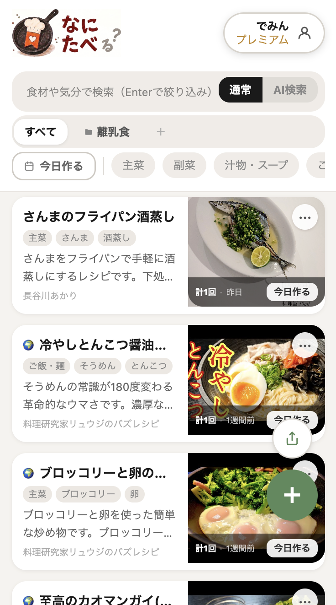

YouTube・Instagram・Xなどの動画レシピをAIが瞬時に構造化。
材料のチェック機能や手順の整理など、実際の操作感を下でお試しください。
揚げ焼きでサクッとジューシー！特製タルタルソースと甘酢ダレが絶品の黄金比レシピ。
「探す・買い出し・調理中」。これまで無駄にしていた時間とストレスが、なにたべ一つでゼロになります。
Instagram、YouTube、X… 保存した場所がバラバラで、いざ作ろうとした時に探すだけで10分以上経過。「あのレシピどこだっけ？」と諦める羽目に。
保存元に関係なく一箇所に集約。正確な料理名を覚えていなくても、食材や気分を入力するだけでAIが目当てのレシピを瞬時に引き出します。

手入力ゼロの保存から、迷わない調理、そして日々のレパートリーの充実へ。
料理に関わるあらゆるストレスを解消する機能が揃っています。
Instagram、YouTube、X、TikTok、クックパッドなどのレシピURLを貼るだけ。AIがレシピ名・材料・分量・手順を自動で整理し、使いやすいカードを生成します。面倒な手入力は一切不要です。
「鶏肉 さっぱり」「疲れた日の簡単ごはん」など、普段の話し言葉で検索。曖昧な記憶からでもAIが目当てのレシピを素早く見つけ出します。
その日に作るメニューだけをピン留め。夕方の忙しい時間も迷わずすぐ調理に入れます。作った履歴も自動で記録。
調理中にスマホの画面がスリープして真っ暗になるストレスを防止。さらに「この工程で投入する調味料」だけがステップ直下に表示されるため、濡れた手で画面をスクロールする回数が劇的に減ります。
「離乳食」「お弁当」「おつまみ」など、レシピ保存時にAIが最適なフォルダを自動提案。整理の手間がゼロになります。
他のユーザーが公開した人気レシピが集まるフィード。新しい定番料理との出会いや、いいね・保存がフリープランから楽しめます。
よく使う食材（豚肉・卵・鶏肉など）やジャンルをグラフ化。偏りがちな毎日の献立バランスを客観的に見直せます。
面倒な手続きや勝手な課金、個人情報の心配はありません
登録時にクレジットカードの入力は一切不要です。フリープラン（レシピ50件・AI解析月10回）はずっと無料で、勝手に課金される心配はありません。
ご自身のInstagramやXのアカウントパスワードや権限連携を求めることはありません。公開されているURLをコピーして貼るだけで動作します。
有料プランを契約した場合でも、マイページからいつでもワンクリックで解約できます。解約金や期間の縛りは一切ありません。退会もいつでも可能です。
まずは無料でお試しください
フリー
無料
スタンダード
¥130/月
※早期限定特別価格
プレミアム
¥380/月
※早期限定特別価格
・早期限定価格（¥130・¥380）で登録された方は、解約されない限りずっと現在の特別価格のままご利用いただけます
・AI解析・AI検索の回数は毎月1日にリセットされます
・いつでも解約できます。解約後は次の更新日まで利用可能です
・月の途中でアップグレードした場合、使用済み回数はそのまま引き継がれます
X（旧Twitter）・Instagram・YouTube・クックパッド・クラシルなど、ほとんどのレシピページのURLに対応しています。URLをコピーして貼り付けるだけです。
AIがレシピページを解析し、材料・分量・調理手順・カテゴリを自動で整理する機能です。AI解析なしの場合はタイトルと画像のみ保存されます。後からでも追加できます。
その日に「今日作る」ボタンを押したレシピだけを一覧表示できる機能です。スタンダードプラン以上で利用できます。レシピカードのボタンを押すだけで調理記録も同時に積み上がります。
できます。フリープランを含む全プランで、広場の閲覧・いいね・レシピの保存（自分のリストへの追加）がすべて利用できます。広場のレシピをタップして「保存する」ボタンで追加できます。
消費しません。登録済みのレシピデータをアプリ内で集計するだけです。スタンダードプラン以上で利用できます。
毎月1日の0時に自動リセットされます。月の途中でプランをアップグレードした場合、使用済みの回数はそのまま引き継がれます（リセットはされません）。
はい。クレジットカード登録なしで、レシピ50件・AI解析月10回の範囲で無料でお使いいただけます。
はい。設定画面の「プラン詳細」からいつでも解約できます。解約後は次の更新日まで引き続き利用できます。
いいえ。タップするとChatGPT・Claude・Perplexityなど、ふだんお使いのAIが別タブで開きます。レシピの材料・手順がプロンプトに自動で入力された状態でスタートします。アプリ内ではなく、使い慣れたAI環境でそのまま会話できます。
スタンダードプラン以上で対応しています。自分のGemini APIキーを登録すれば、AI解析・AI検索を実質無制限で使えます。
現在、App Store・Google Playへの公開は準備中です。ただし、ブラウザからホーム画面に追加することで、アプリのように使うことができます。ご準備ができ次第あらためてご案内します。
【iPhoneの場合】 Safariでなにたべを開く → 画面下の共有ボタン（四角に上矢印のアイコン）をタップ → 「ホーム画面に追加」を選択 → 右上の「追加」をタップ 【Androidの場合】 ChromeでなにたべのURLを開く → 右上のメニュー（︙）をタップ → 「ホーム画面に追加」を選択 → 「追加」をタップ ホーム画面にアイコンが追加され、アプリのように起動できます。
クックパッドのレシピURLも保存できるほか、Instagram・X・YouTube・TikTokなどSNSのレシピもまとめて管理できます。クックパッドでは対応していないSNSレシピの一元管理に強みがあります。
現在は早期ユーザー向けの特別価格でご案内しています。将来的に通常価格（スタンダード¥300・プレミアム¥980）に戻す可能性がありますが、今のうちに登録いただいた方は、解約されない限りずっと特別価格（¥130・¥380）のままご利用いただけます。
はい、無料で使えます。クレジットカード登録なしで、レシピ50件・AI解析月10回までフリープランでご利用いただけます。もっと使いたい場合は月額130円のスタンダードプランもご用意しています。
できます。「離乳食」「お弁当用」「週末料理」など自由にフォルダを作成でき、レシピ保存時にAIが最適なフォルダを自動で提案してくれます（スタンダードプラン以上）。
SNSに溢れるレシピの整理術や、調理中のストレスを減らす時短テクニックなど、日々の料理がもっと楽しくなるコラムを配信しています。
「外部URLを取り込めるか」という、使ってから後悔しやすい重要な比較基準について詳しく解説します。
「保存」タブに溜まったレシピが迷子になる根本原因と、材料と手順をテキスト化して持っておく解決法。
調理中に何度も動画を行き来する手間をなくし、テキストとしてスマートに手元に残すコツを紹介します。
月齢ごとに食材・アレルギー対応が変わる離乳食の整理術と、後から見返しやすいフォルダ管理の考え方。
朝の貴重な時間を奪う「何作ろう？」の悩み。ストックレシピをすばやく引き出す分類テクニック。
濡れた手でスマホをタップして画面ロックを解除するストレスの根本原因と、快適な調理環境づくり。